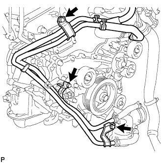
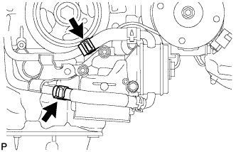
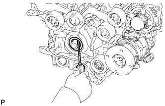

ПЕРЕДНИЙ САЛЬНИК КОЛЕНЧАТОГО ВАЛА > СНЯТИЕ |
| 1. СНИМИТЕ РАДИАТОР В СБОРЕ |
Снимите радиатор (Нажмите здесь).
| 2. ОТСОЕДИНИТЕ ПЕРЕПУСКНОЙ ПАТРУБОК ОХЛАЖДАЮЩЕЙ ЖИДКОСТИ В СБОРЕ (для моделей с масляным радиатором) |
|  |
Выверните 3 болта.
|  |
Отсоедините 2 шланга и перепускную трубку охлаждающей жидкости.
| 3. СНИМИТЕ КРОНШТЕЙН МАСЛЯНОГО ФИЛЬТРА |
 |
Отверните 2 гайки, выверните болт и снимите кронштейн масляного фильтра с прокладкой.
| *A | Для моделей с масляным радиатором |
| *B | Для моделей без масляного радиатора |
| 4. СНИМИТЕ ШКИВ КОЛЕНЧАТОГО ВАЛА |
 |
Используя SST, зафиксируйте шкив коленчатого вала и ослабьте болт шкива. Дополнительно ослабьте болт, чтобы он был ввернут в коленчатый вал на 2 - 3 витка резьбы.
 |
С помощью установочного болта шкива и SST снимите шкив коленчатого вала и выверните болт шкива.
| 5. СНИМИТЕ ПЕРЕДНИЙ САЛЬНИК КОЛЕНЧАТОГО ВАЛА |
|  |
Извлеките сальник с помощью отвертки.